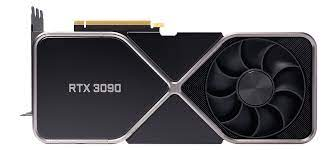

Carte graphique Nvidia GeForce RTX 3090

Nvidia GeForce RTX 3090 1459 €
Caractéristiques de la carte graphique Nvidia GeForce RTX 3090:
- Architecture
- Ampère
- Fréquence de base - 1.4 GHz
- Fréquence boost - 1.7 GHz
- Processeurs de flux - 10496
- Quantité de mémoire vidéo - 24 Go
- Interface mémoire - 376 bit
- Type de mémoire - GDDR6X
- Finesse de gravure - 8nm